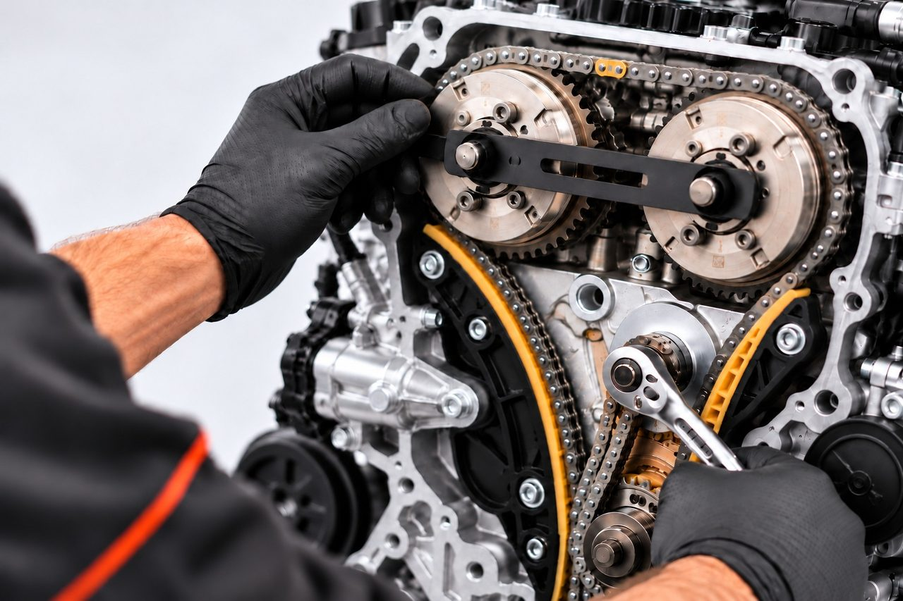
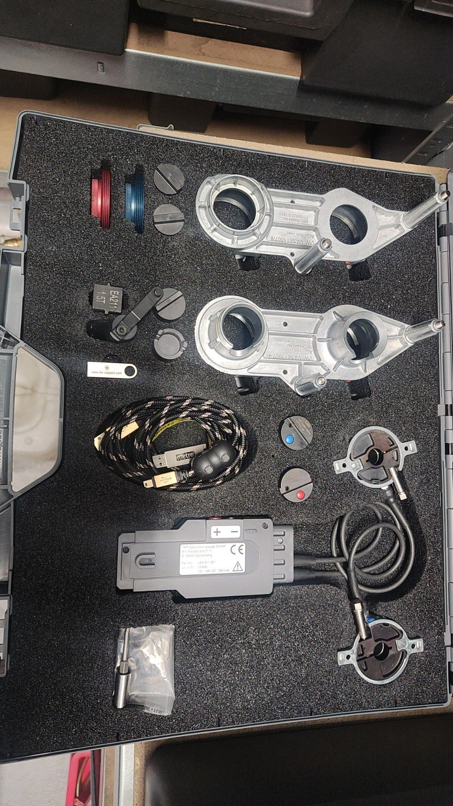

Výměna rozvodů

J&S servis – nezávislý specializovaný autoservis vozidel Volkswagen, Audi, Škoda, SEAT a CUPRA od roku 1994.
Provádíme odborné výměny rozvodových řemenů a řetězů v souladu s technologickými postupy výrobce. Při opravách používáme předepsané aretační, montážní a měřicí přípravky.
- Elektronické měření rozvodů VAS 611 007
- Výměna rozvodů dle postupů výrobce
- Specializace na VW Group od roku 1994

Přesné elektronické měření a nastavení rozvodů
Disponujeme kompletním elektronickým měřicím systémem VAS 611 007 včetně příslušných adaptérových sad. U vybraných motorizací jej využíváme k přesnému měření a nastavení časování vačkových hřídelů podle technologických postupů výrobce.
Před objednáním
Rozvodový řemen a rozvodový řetěz vyžadují odlišný postup. Označení TSI nebo TDI samo neurčuje servisní interval ani použitelnou cenovou variantu. Konkrétní základní úkon a potřebné součásti je nutné vymezit v kalkulaci podle motoru a VIN; uvedená cena „od“ není jednotnou cenou pro všechny motorizace.
Kalkulace podle konkrétního vozu
Uvedené ceny zahrnují pouze práci při výměně rozvodů v odpovídajícím rozsahu. Náhradní díly, provozní kapaliny a spotřební materiál se účtují samostatně.
Příslušnou cenovou variantu, technologický postup a rozsah opravy ověřujeme podle VIN vozidla. Před zahájením prací zákazníkovi předložíme celkovou cenovou kalkulaci.